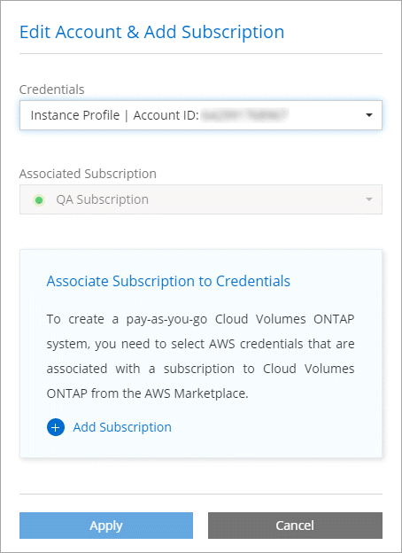

发行说明
发行说明
Cloud Manager 3.8 中的新增功能
 建议更改
建议更改
Cloud Manager 通常会每月推出一个新版本，为您提供新功能，增强功能和错误修复。

|
正在查找先前版本？"3.7 中的新增功能" "3.6 中的新增功能" "3.5 中的新增功能" |
新的 Terraform 提供程序（ 2020 年 10 月 19 日）
我们开发了一个新的 Terraform 提供商，开发运营团队可以使用 Cloud Manager 来自动化 Cloud Volumes ONTAP 并将其与基础架构即代码集成。
Cloud Manager 3.8.9 更新（ 2020 年 10 月 18 日）
利用 "Spot 的 Cloud Analyzer"， Cloud Manager 现在可以对您的云计算支出进行高级别的成本分析，并确定潜在的节省量。此信息可从 Cloud Manager 中的 * 计算 * 服务获得。 "了解更多信息。"。

Cloud Manager 3.8.9 更新（ 2020 年 10 月 13 日）
我们已发布两个 Cloud Tiering 更新：
-
Cloud Manager 现已提供 Cloud Tiering 许可。
通过按需购买订阅，名为 _FabricPool 的 ONTAP 分层许可证或两者的组合，为从内部 ONTAP 集群到云的数据分层付费。
-
独立的 Cloud Tiering 服务已停用。现在，您应直接从 Cloud Manager 访问 Cloud Tiering ，在 Cloud Manager 中，所有相同的特性和功能均可用。
Cloud Manager 3.8.9 （ 2020 年 10 月 4 日）
云合规性增强功能
-
Cloud Manager 中提供了一个新的 * 云合规性查看器 * 角色。
分配了此角色的用户只能查看其有权访问的工作空间的合规性信息并生成报告。他们无法管理 Cloud Compliance 设置，也无法访问任何其他 Cloud Manager 功能和服务。这可能是您的法律团队的理想角色，他们可以监控 Cloud Compliance 扫描结果。请参见 "用户角色" 了解详细信息。
-
增加了对扫描 MongoDB 和 PostgreSQL 数据库架构的支持。请参见 "正在扫描数据库架构" 有关详细信息 …
-
自 10 月 7 日起，云合规性定价将发生变化。
Cloud Compliance 在 Cloud Manager 工作空间中扫描的前 1 TB 数据是免费的。其中包括来自 Cloud Volumes ONTAP 卷， Azure NetApp Files 卷， Amazon S3 分段和数据库架构的数据。达到 1 TB 后，需要订阅才能扫描任何其他数据。请参见 "定价" 了解详细信息。
适用于 AWS 的 Cloud Volumes Service 增强功能
创建新卷时，您可以选择将该卷基于另一个卷的现有 Snapshot 副本。
Cloud Sync 集成
NetApp 的 Cloud Sync 服务现在可从 Cloud Manager 中获得。Cloud Sync 提供了一种简单、安全且自动化的方法、可以将数据从任意源目标位置迁移到云中或内部的任何目标位置。 "了解更多信息。"。
帐户管理增强功能
我们增加了更多方式来管理您的帐户。
-
现在，您可以简要了解您的帐户资源。
您可以快速查看帐户中的用户，工作空间，连接器和订阅数量。
-
您可以更改帐户的名称。
-
您可以复制帐户 ID ，工作空间 ID 或连接器 ID 。
复制这些 ID 将有助于我们规划的自动化功能。
-
您可以禁用 SaaS 平台。
除非您需要遵守公司的安全策略，否则我们不建议禁用 SaaS 平台。禁用 SaaS 平台会限制您使用 NetApp 集成云服务的能力。 "了解更多信息。"。

政府区域的变更
如果您在 AWS GovCloud 区域， Azure Gov 区域或 Azure DoD 区域部署 Connector ，则现在只能通过 Connector 的主机 IP 地址访问 Cloud Manager 。对整个帐户禁用对 SaaS 平台的访问。
这意味着，只有能够访问最终用户内部 VPC-vNet 的有权限用户才能使用 Cloud Manager 的 UI 或 API 。
Cloud Manager 3.8.8 更新（ 2020 年 9 月 22 日）
我们对 Kubernetes 服务进行了改进，使其更易于使用，并提供了更多功能：
-
我们可以更轻松地发现在云提供商的托管 Kubernetes 服务中运行的 Kubernetes 集群。
只需单击 * 发现集群 * ， Cloud Manager 将使用您已提供的云提供商权限发现受管集群。
-
现在，您可以查看有关已发现的 Kubernetes 集群的详细信息，包括其状态，卷数，存储类等。

-
我们增加了资源和错误检查功能，以确保集群和 Cloud Volumes ONTAP 之间可以进行通信。如果不是，我们会告知您。
请注意， Connector 的服务帐户需要以下权限才能发现和管理在 Google Kubernetes Engine （ GKEE ）中运行的 Kubernetes 集群：
- container.*Cloud Manager 3.8.8 更新（ 2020 年 9 月 10 日）
通过 Cloud Manager 部署全局文件缓存时，可以使用以下增强功能：
-
现在， AWS 中的 Cloud Volumes ONTAP HA 对可用作中央存储的后端存储平台。
-
可以在负载分布式设计中部署多个全局文件缓存核心实例。
Cloud Manager 3.8.8 （ 2020 年 9 月 9 日）
支持适用于 Google Cloud 的 Cloud Volumes Service
-
添加一个工作环境，用于管理 GCP 卷的现有 Cloud Volumes Service 并创建新卷。 "了解如何操作"。
-
为 Linux 和 UNIX 客户端创建和管理 NFSv3 和 NFSv4.1 卷，为 Windows 客户端创建和管理 SMB 3.x 卷。
-
创建，删除和还原卷快照。
现在，备份到云支持内部 ONTAP 集群
开始将数据从内部 ONTAP 系统备份到云。在内部工作环境中启用备份到云，将卷备份到 Azure Blob 存储。 "了解更多信息。"。
备份到云增强功能
为了提高可用性，我们对用户界面进行了修订：
-
卷列表页面，可轻松查看正在备份的卷以及可用备份
-
备份设置页面，用于查看每个工作环境的备份设置
云合规性增强功能
-
能够从数据库扫描数据
扫描数据库以确定驻留在每个架构中的个人和敏感数据。支持的数据库包括 Oracle ， SAP HANA 和 SQL Server （ MSSQL ）。 "了解有关扫描数据库的更多信息"。
-
能够扫描数据保护（ DP ）卷
DP 卷是通常来自内部 ONTAP 集群的 SnapMirror 操作的目标卷。现在，您可以轻松识别这些内部文件中的个人和敏感数据。 "了解如何操作"。
已刷新导航
我们更新了 Cloud Manager 中的标题，使您可以更轻松地在 NetApp 云服务之间导航。
单击 * 查看所有服务 * ，您可以固定和取消固定要在导航中查看的服务。

如您所见，我们还刷新了 " 帐户 " ， " 工作空间 " 和 " 连接器 " 下拉列表，以便于查看您当前选择的内容。
管理改进
-
现在，您可以从 Cloud Manager 中删除非活动连接器。 "了解如何操作"。

-
现在，您可以替换当前与您的云提供商凭据关联的 Marketplace 订阅。如果您需要更改收费方式，此更改可以帮助您确保通过正确的 Marketplace 订阅向您收取费用。
了解如何操作 "在 AWS 中"， "在 Azure 中"，和 "在 GCP 中"。
更新所需的 Azure 权限（ 2020 年 8 月 6 日）
要避免 Azure 部署失败，请确保 Azure 中的 Cloud Manager 策略包含以下权限：
"Microsoft.Resources/deployments/operationStatuses/read"Azure 现在在某些虚拟机部署中需要此权限（取决于部署期间使用的底层物理硬件）。
Cloud Manager 3.8.7 （ 2020 年 8 月 3 日）
全新的软件即服务体验
我们已为 Cloud Manager 全面推出软件即服务体验。这种全新体验让您可以更轻松地使用 Cloud Manager ，并使我们能够提供更多功能来管理您的混合云基础架构。
Cloud Manager 包括 "SaaS-based 接口" 它与 NetApp Cloud Central 和 Connectors 相集成，支持 Cloud Manager 管理公有云环境中的资源和流程。（此连接器实际上与您安装的现有 Cloud Manager 软件相同。）

|
在大多数情况下，需要使用连接器，但使用 Cloud Manager 中的 Azure NetApp Files ， Cloud Volumes Service 或 Cloud Sync 并不需要连接器。 |
如本发行说明中所述，您需要升级 Connector 的计算机类型才能访问我们提供的新功能。Cloud Manager 将提示您更改计算机类型的说明。 "了解更多信息。"。
Cloud Volumes ONTAP 增强功能
Cloud Volumes ONTAP 提供了两项增强功能。
-
* 多个 BYOL 许可证以分配额外容量 *
现在，您可以为 Cloud Volumes ONTAP BYOL 系统购买多个许可证，以分配超过 368 TB 的容量。例如，您可以购买两个许可证，以便为 Cloud Volumes ONTAP 分配高达 736 TB 的容量。或者，您也可以购买四个许可证，以获得高达 1.4 PB 的容量。
您可以为单节点系统或 HA 对购买的许可证数量不受限制。
请注意，磁盘限制可能会阻止您单独使用磁盘来达到容量限制。您可以通过超出磁盘限制 "将非活动数据分层到对象存储"。有关磁盘限制的信息，请参见 "《 Cloud Volumes ONTAP 发行说明》中的存储限制"。
-
* 使用外部密钥加密 Azure 受管磁盘 *
现在，您可以使用其他帐户的外部密钥对单节点 Cloud Volumes ONTAP 系统上的 Azure 受管磁盘进行加密。使用 API 支持此功能。
创建单节点系统时，只需将以下内容添加到 API 请求中：
"azureEncryptionParameters": { "key": <azure id of encryptionset> }此功能需要新的权限，如最新所示 "适用于 Azure 的 Cloud Manager 策略"。
"Microsoft.Compute/diskEncryptionSets/read"
Azure NetApp Files 增强功能
此版本提供了多项增强功能来支持 Azure NetApp Files 。
-
* Azure NetApp Files 设置 *
现在，您可以直接从 Cloud Manager 设置和管理 Azure NetApp Files 。 "了解如何操作"。
-
* 新协议支持 *
现在，您可以创建 NFSv4.1 卷和 SMB 卷。
-
* 容量池和卷快照管理 *
您可以使用 Cloud Manager 创建，删除和还原卷快照。您还可以创建新的容量池并指定其服务级别。
-
* 能够编辑卷 *
您可以通过更改卷大小和管理标记来编辑卷。
适用于 AWS 的 Cloud Volumes Service 增强功能
Cloud Manager 中有许多增强功能，可支持 Cloud Volumes Service for AWS 。
-
* 新协议支持 *
现在，您可以创建 NFSv4.1 卷， SMB 卷和双协议卷。以前，您只能在 Cloud Manager 中创建和发现 NFSv3 卷。
-
* Snapshot 支持 *
您可以创建快照策略来自动创建卷快照，创建按需快照，从快照还原卷，基于现有快照创建新卷等。请参见 "管理云卷快照" 有关详细信息 …
-
* 使用 Cloud Manager* 在区域中创建初始卷
在此版本之前，必须在 Cloud Volumes Service for AWS 界面中创建每个区域的第一个卷。现在，您可以订阅 "AWS 市场上的一款 NetApp Cloud Volumes Service 产品" 然后从 Cloud Manager 创建第一个卷。
云合规性增强功能
Cloud Compliance 现在提供了以下增强功能。
-
* 已修订云合规性实例的部署流程 *
Cloud Compliance 实例可使用 Cloud Manager 中的新向导进行设置和部署。部署完成后，您可以为要扫描的每个工作环境启用此服务。
-
* 能够选择要在工作环境中扫描的卷 *
现在，您可以在 Cloud Volumes ONTAP 或 Azure NetApp Files 工作环境中启用和禁用单个卷的扫描。如果您不需要扫描某些卷以确定合规性，请将其关闭。
-
* 可快速跳至感兴趣区域的导航选项卡 *
通过信息板，调查和配置的新选项卡，您可以更轻松地访问这些部分。
-
* HIPAA 报告 *
现在，我们发布了一份新的健康保险携带和责任法案（ HIPAA ）报告。本报告旨在帮助贵组织满足 HIPAA 数据隐私法律的要求。
-
* 新的敏感个人数据类型 *
Cloud Compliance 现在可以在文件中找到 ICD-9-CM 医疗代码。
-
* 新的个人数据类型 *
Cloud Compliance 现在可以在文件中找到两个新的国家标识符：克罗地亚 ID （ OIB ）和希族 ID 。
备份到云增强功能
以下增强功能现在可用于备份到云。
-
* 自带许可证（ BYOL ）现已推出 *
只有使用按需购买（ PAYGO ）许可证才能备份到云。通过 BYOL 许可证，您可以从 NetApp 购买一份许可证，以便在一段时间内使用 " 备份到云 " ，并获得最大备份空间量。达到任一限制后，您需要续订许可证。
-
* 支持数据保护（ DP ）卷 *
现在可以备份和还原数据保护卷。
支持全局文件缓存
借助 NetApp 全局文件缓存，您可以将分布式文件服务器孤岛整合到公有云中一个统一的全局存储占用空间中。这样就可以在云中创建一个可全局访问的文件系统，所有分布式位置都可以像在本地一样使用该系统。
从此版本开始，可以通过 Cloud Manager 部署和管理全局文件缓存管理实例和核心实例。这样可以在初始部署过程中节省大量时间，并通过 Cloud Manager 为该系统以及其他已部署系统提供单一管理平台。全局文件缓存边缘实例仍部署在远程办公室的本地。
请参见 "全局文件缓存概述" 有关详细信息 …
可以使用 Cloud Manager 部署的初始配置必须满足以下要求。Cloud Volumes Service ， Azure NetApp Files ， Cloud Volumes Service for AWS 和 GCP 等其他配置仍会使用原有过程进行部署。 "了解更多信息。"。
-
用作中央存储的后端存储平台必须是在 Azure 中部署 Cloud Volumes ONTAP HA 对的工作环境。
目前，使用 Cloud Manager 不支持其他存储平台和其他云提供商，但可以使用传统部署过程进行部署。
-
GFC 核心只能作为独立实例进行部署。
如果您需要使用包含多个核心实例的负载分布式设计，则必须使用原有过程。
此功能需要新的权限，如最新所示 "适用于 Azure 的 Cloud Manager 策略"。
"Microsoft.Resources/deployments/operationStatuses/read",
"Microsoft.Insights/Metrics/Read",
"Microsoft.Compute/virtualMachines/extensions/write",
"Microsoft.Compute/virtualMachines/extensions/read",
"Microsoft.Compute/virtualMachines/extensions/delete",
"Microsoft.Compute/virtualMachines/delete",
"Microsoft.Network/networkInterfaces/delete",
"Microsoft.Network/networkSecurityGroups/delete",
"Microsoft.Resources/deployments/delete",改善体验需要更强大的机器类型（ 2020 年 7 月 15 日）
随着 Cloud Manager 体验的改善，您需要升级您的计算机类型才能访问我们将提供的新功能。这些改进包括 "Cloud Manager 的软件即服务体验" 以及经过改进的全新云服务集成。
Cloud Manager 将提示您更改计算机类型的说明。
下面是一些详细信息：
-
为了确保有足够的资源来使 Cloud Manager 中的新功能正常运行，我们对默认实例， VM 和计算机类型进行了如下更改：
-
AWS ： T3.xlarge
-
Azure ： DS3 v2
-
GCP ： N1-standard-4
这些默认大小为支持的最小值 "基于 CPU 和 RAM 要求"。
-
-
在此过渡过程中， Cloud Manager 需要访问以下端点，以便为 Docker 基础架构获取容器组件的软件映像：
确保您的防火墙允许从 Cloud Manager 访问此端点。
Cloud Manager 3.8.6 （ 2020 年 7 月 6 日）
支持 iSCSI 卷
现在，您可以通过 Cloud Manager 直接从用户界面为 Cloud Volumes ONTAP 和内部 ONTAP 集群创建 iSCSI 卷。
创建 iSCSI 卷时， Cloud Manager 会自动为您创建 LUN 。我们通过为每个卷仅创建一个 LUN 来简化此过程，因此无需进行管理。创建卷后， "使用 IQN 从主机连接到 LUN"。
|
|
您可以从 System Manager 或 CLI 创建其他 LUN 。 |
支持所有分层策略
现在，您可以在为 Cloud Volumes ONTAP 创建或修改卷时选择所有分层策略。使用所有分层策略时，数据会立即标记为冷，并尽快分层到对象存储。 "了解有关数据分层的更多信息。"。
Cloud Manager 过渡到 SaaS （ 2020 年 6 月 22 日）
我们将推出 Cloud Manager 的软件即服务体验。这种全新体验让您可以更轻松地使用 Cloud Manager ，并使我们能够提供更多功能来管理您的混合云基础架构。 "了解更多信息。"。
Cloud Manager 3.8.5 （ 2020 年 5 月 31 日）
Azure Marketplace 中需要新订阅
Azure Marketplace 中提供了新订阅。要部署 Cloud Volumes ONTAP 9.7 PAYGO ，需要一次性订阅（ 30 天免费试用系统除外）。通过订阅，我们还可以为 Cloud Volumes ONTAP PAYGO 和 BYOL 提供附加功能。对于您创建的每个 Cloud Volumes ONTAP PAYGO 系统以及您启用的每个附加功能，此订阅将向您收取费用。
在部署新的 Cloud Volumes ONTAP 系统（ 9.7 P1 或更高版本）时， Cloud Manager 将提示您订阅此服务。

备份到云增强功能
以下增强功能现在可用于备份到云。
-
现在，您可以在 Azure 中创建新资源组或选择现有资源组，而无需让 Cloud Manager 为您创建一个资源组。启用备份到云后，无法更改资源组。
-
现在，在 AWS 中，您可以备份驻留在与您的 Cloud Manager AWS 帐户不同的 AWS 帐户上的 Cloud Volumes ONTAP 实例。
-
现在，在为卷选择备份计划时，还可以使用其他选项。除了每天，每周和每月备份选项之外，您现在还可以选择一个系统定义的策略，这些策略可提供组合策略，例如每天 30 次备份，每周 13 次备份和每月 12 次备份。
-
删除卷的所有备份后，您现在可以重新开始为该卷创建备份。这是先前版本中的一个已知限制。
云合规性增强功能
以下增强功能可用于 Cloud Compliance 。
-
现在，您可以扫描与 Cloud Compliance 实例位于不同 AWS 帐户中的 S3 存储分段。您只需在该新帐户上创建一个角色，即可使现有 Cloud Compliance 实例连接到这些存储分段。 "了解更多信息。"。
如果您在 3.2.5 版之前配置了 Cloud Compliance ，则需要修改现有 "Cloud Compliance 实例的 IAM 角色" 以使用此功能。
-
现在，您可以筛选调查页面的内容，以便仅显示要查看的结果。筛选器包括工作环境，类别，私有数据，文件类型，上次修改日期， 以及 S3 对象的权限是否允许公有访问。

-
现在，您可以直接从 Cloud Compliance 选项卡在工作环境中激活和停用 Cloud Compliance 。
Cloud Manager 3.8.4 更新（ 2020 年 5 月 10 日）
我们发布了 Cloud Manager 3.1.4 的增强功能。
Cloud Insights 集成
通过利用 NetApp 的 Cloud Insights 服务， Cloud Manager 可以让您深入了解 Cloud Volumes ONTAP 实例的运行状况和性能，并帮助您对云存储环境的性能进行故障排除和优化。 "了解更多信息。"。
Cloud Manager 3.8.4 （ 2020 年 5 月 3 日）
Cloud Manager 3.8.3 （ 2020 年 4 月 5 日）
Cloud Tiering 集成
NetApp 的 Cloud Tiering 服务现在可从 Cloud Manager 中获得。通过云分层，您可以将内部 ONTAP 集群中的数据分层到云中成本较低的对象存储。这样可以释放集群上的高性能存储空间，以处理更多工作负载。
将数据迁移到 Azure NetApp Files
现在，您可以直接从 Cloud Manager 将 NFS 或 SMB 数据迁移到 Azure NetApp Files 。数据同步由 NetApp 的 Cloud Sync 服务提供支持。
云合规性增强功能
Cloud Compliance 现在提供了以下增强功能。
-
* 30 天免费试用 Amazon S3*
现在，我们提供 30 天免费试用，可通过 Cloud Compliance 扫描 Amazon S3 数据。如果您之前在 Amazon S3 上启用了 Cloud Compliance ，则自今日（ 2020 年 4 月 5 日）起，您的 30 天免费试用将有效。
在免费试用结束后，要继续扫描 Amazon S3 ，需要订阅 AWS Marketplace 。 "了解如何订阅"。
-
* 新的个人数据类型 *
Cloud Compliance 现在可以在文件中找到一个新的国家标识符：巴西 ID （ CPF ）。
-
* 支持其他元数据类别 *
Cloud Compliance 现在可以将您的数据分类为其他九个元数据类别。 "请参见支持的元数据类别的完整列表"。
备份到 S3 增强功能
现在，备份到 S3 服务提供了以下增强功能。
-
用于备份的 * S3 生命周期策略 *
备份从 Standard 存储类开始，并在 30 天后过渡到 Standard-Infrequent Access 存储类。
-
* 删除备份 *
现在，您可以使用 Cloud Manager API 删除备份。 "了解更多信息。"。
-
* 阻止公有访问 *
Cloud Manager 现在可启用 "Amazon S3 块公有访问功能" 在存储备份的 S3 存储分段上。
使用 API 的 iSCSI 卷
现在，您可以使用 Cloud Manager API 创建 iSCSI 卷。 "请在此处查看示例"。
Cloud Manager 3.8.2 （ 2020 年 3 月 1 日）
Amazon S3 工作环境
Cloud Manager 现在可以自动发现有关安装了 Amazon S3 存储分段的 AWS 帐户中的 Amazon S3 存储分段的信息。这样，您可以轻松查看有关 S3 存储分段的详细信息，包括区域，访问级别，存储类以及存储分段是否与 Cloud Volumes ONTAP 一起用于备份或数据分层。您可以使用 Cloud Compliance 扫描 S3 存储分段，如下所述。

云合规性增强功能
Cloud Compliance 现在提供了以下增强功能。
-
* 支持 Amazon S3*
Cloud Compliance 现在可以扫描 Amazon S3 存储分段，以确定 S3 对象存储中的个人和敏感数据。Cloud Compliance 可以扫描帐户中的任何存储分段，而不管它是否是为 NetApp 解决方案创建的。
-
* 调查页面 *
现在，我们为每种类型的个人文件，敏感个人文件，类别和文件类型提供了一个新的调查页面。此页面显示了有关受影响文件的详细信息，并可用于按包含最个人数据，敏感个人数据和数据主体名称的文件进行排序。此页面将替换先前可用的 CSV 报告。
下面是一个示例：

-
* PCI DSS 报告 *
现在，我们提供了一份全新的支付卡行业数据安全标准（ PCI DSS ）报告。此报告可帮助您确定信用卡信息在整个文件中的分布情况。您可以查看包含信用卡信息的文件数量，工作环境是否受加密或勒索软件保护，保留详细信息等保护。
-
* 新的敏感个人数据类型 *
Cloud Compliance 现在可以找到 ICD-10-CM 医疗代码，这些代码用于医疗和健康行业。
卷的 NFS 版本
现在，您可以在为 Cloud Volumes ONTAP 创建或编辑卷时选择要在卷上启用的 NFS 版本。

Cloud Manager 3.8.1 更新（ 2020 年 2 月 16 日）
我们对 Cloud Manager 3.1.1 发布了一些增强功能。
备份到 S3 增强功能
-
现在，备份副本存储在 Cloud Manager 在 AWS 帐户中创建的 S3 存储分段中，每个 Cloud Volumes ONTAP 工作环境一个存储分段。
-
现在，所有 AWS 地区均支持备份到 S3 "支持 Cloud Volumes ONTAP 的位置"。
-
您可以将备份计划设置为每日，每周或每月。
-
Cloud Manager 不再需要为备份到 S3 服务设置 private links 。
这些增强功能还需要其他 S3 权限。为 Cloud Manager 提供权限的 IAM 角色必须包含最新的权限 "Cloud Manager 策略"。
AWS 更新
我们引入了对新 EC2 实例的支持，并对 Cloud Volumes ONTAP 9.6 和 9.7 支持的数据磁盘数量进行了更改。请查看《 Cloud Volumes ONTAP 发行说明》中的更改。
Cloud Manager 3.8.1 （ 2020 年 2 月 2 日）
云合规性增强功能
Cloud Compliance 现在提供了以下增强功能。
-
* 支持 Azure NetApp Files *
我们很高兴地宣布，云合规部门现在可以扫描 Azure NetApp Files 以识别卷上的个人和敏感数据。
-
* 扫描状态 *
Cloud Compliance 现在可为您显示每个 CIFS 和 NFS 卷的扫描状态，包括可用于更正任何问题的错误消息。

-
* 按工作环境筛选信息板 *
现在，您可以筛选 " 云合规性 " 信息板的内容，以查看特定工作环境的合规性数据。

-
* 新的个人数据类型 *
Cloud Compliance 现在可以在扫描数据时识别加利福尼亚驱动程序许可证。
-
* 支持其他类别 *
另外还支持三个类别：应用程序数据，日志以及数据库和索引文件。
帐户和订阅的增强功能
我们可以更轻松地为按需购买 Cloud Volumes ONTAP 系统选择 AWS 帐户或 GCP 项目以及相关的市场订阅。这些增强功能有助于确保您从正确的客户或项目中支付费用。
例如，在 AWS 中创建系统时，如果不想使用默认帐户和订阅，请单击 * 编辑凭据 * ：

在此，您可以选择要使用的帐户凭据以及关联的 AWS Marketplace 订阅。如果需要，您甚至可以添加 Marketplace 订阅。

如果您管理多个 AWS 订阅，则可以从设置中的凭据页面将其中每个订阅分配给不同的 AWS 凭据：

时间线增强功能
时间线已进行了改进，可为您提供有关所使用的 NetApp 云服务的更多信息。
-
此时，时间线将显示同一 Cloud Central 帐户中所有 Cloud Manager 系统的操作
-
现在，您可以通过筛选，搜索以及添加和删除列来更轻松地查找信息
-
现在，您可以下载 CSV 格式的时间线数据
-
未来，时间线将显示您使用的每个 NetApp 云服务的操作（但您可以将信息筛选为一个服务）

Cloud Manager 3.8 （ 2020 年 1 月 8 日）
Azure 中的 HA 增强功能
现在， Azure 中的 Cloud Volumes ONTAP HA 对具有以下增强功能。
-
* 覆盖 Azure* 中 Cloud Volumes ONTAP HA 的 CIFS 锁定
现在，您可以在 Cloud Manager 中启用一项设置，以防止在 Azure 维护事件期间出现 Cloud Volumes ONTAP 存储故障转移问题。启用此设置后， Cloud Volumes ONTAP 将否决 CIFS 锁定并重置活动 CIFS 会话。 "了解更多信息。"。
-
从 Cloud Volumes ONTAP 到存储帐户的 * HTTPS 连接 *
现在，您可以在创建工作环境时启用从 Cloud Volumes ONTAP 9.7 HA 对到 Azure 存储帐户的 HTTPS 连接。请注意，启用此选项可能会影响写入性能。创建工作环境后，您无法更改此设置。
-
* 支持 Azure 通用 v2 存储帐户 *
Cloud Manager 为 Cloud Volumes ONTAP 9.7 HA 对创建的存储帐户现在是通用 v2 存储帐户。
GCP 中的数据分层增强功能
以下增强功能可用于 GCP 中的 Cloud Volumes ONTAP 数据分层。
-
* 用于数据分层的 Google Cloud 存储类 *
现在，您可以为 Cloud Volumes ONTAP 分层到 Google Cloud Storage 的数据选择存储类：
-
标准存储（默认）
-
近线存储
-
冷线存储
-
-
* 使用服务帐户进行数据分层 *
从 9.7 版开始， Cloud Manager 现在可在 Cloud Volumes ONTAP 实例上设置服务帐户。此服务帐户提供将数据分层到 Google Cloud Storage 存储分段的权限。此更改可提高安全性并减少设置要求。有关部署新系统的分步说明， "请参见此页面上的步骤 4"。
下图显示了工作环境向导，您可以在其中选择存储类和服务帐户：

Cloud Manager 需要以下 GCP 权限才能进行这些增强功能，如最新所示 "适用于 GCP 的 Cloud Manager 策略"。
- storage.buckets.update
- compute.instances.setServiceAccount
- iam.serviceAccounts.getIamPolicy
- iam.serviceAccounts.list